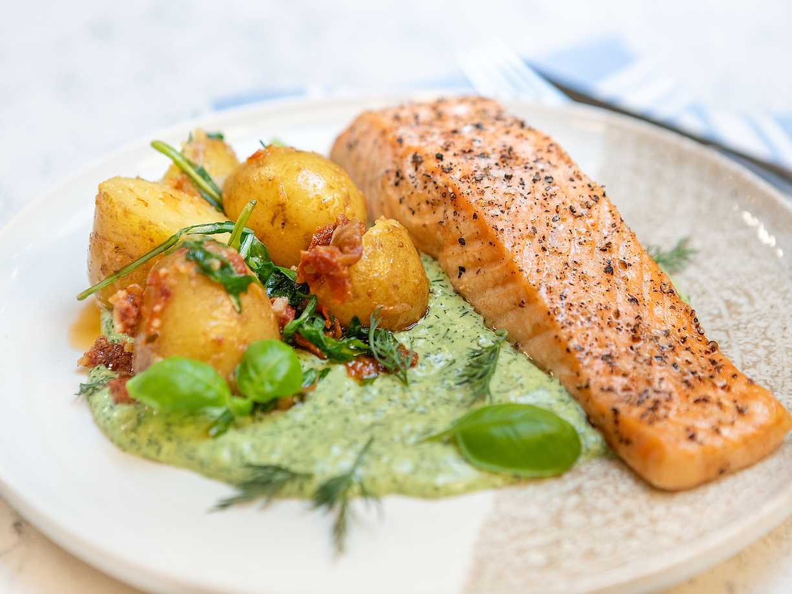

Home🏡
Recept 👨🏻🍳
Veckomeny 📅

Lax🐟
1 10 stycken
⏳ 30 min
Lunch
⭐⭐⭐⭐⭐
0.0
(0)
Skriv en kommentar
0 kommentarer
Skriv en kommentar
Din kommentar
Avbryt
Skicka
Sätt betyg
⭐
⭐⭐
⭐⭐⭐
⭐⭐⭐⭐
⭐⭐⭐⭐⭐
Avbryt
Sätt betyg
Ingredienser
ca 1200 g lax i bit med skinn
3 msk salt
3 msk farinsocker
4 dl rökflis
35 briketter
Gör så här
Lägg laxen på skinnsidan i en form eller på ett fat. Strö ett jämnt lager salt och sedan socker över laxen. Täck över med plastfolie och rimma i 10 timmar i kylskåpet.
Ta ut laxen ur kylskåpet och skölj bort salt och socker under rinnande kallt vatten. Torka laxen försiktigt med hushållspapper och låt den torka i kylen utan plast i ca 2 timmar.
Blötlägg rökflisen och låt dra i 10 minuter. Tänd grillen med briketterna.
Skär laxen i 2 bitar, så att den får plats på grillen. Lägg laxen på bakplåtspapper och lägg gärna på en grillbricka eller grillplanka. Det går också bra att lägga den på ett dubbelvikt bakplåtspapper direkt på gallret.
Häll ut briketterna i en hög på grillens ena sida (vi har använt en 58 cm klotgrill). Låt rökflisen rinna av något och lägg på hälften på briketterna. Lägg laxen på den sida av grillen som inte har briketter under sig. Sätt på locket och rök laxen på ca 150°C i först 10 minuter. Använd spjällen för att kontrollera värmen.
Lägg därefter på resten av rökflisen och rök ytterligare ca 10 minuter eller tills laxen har en innertemperatur på 54°C.
Låt laxen svalna och för bästa smak stå i kylen i ca 8 timmar.
Här finns tips på goda såser att servera till lax.
Kommentarer
Rensa kommentarer
Skriv en kommentar